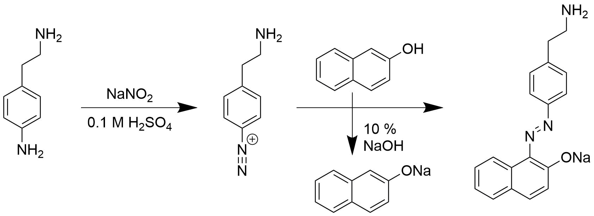
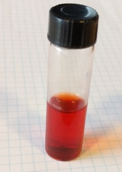
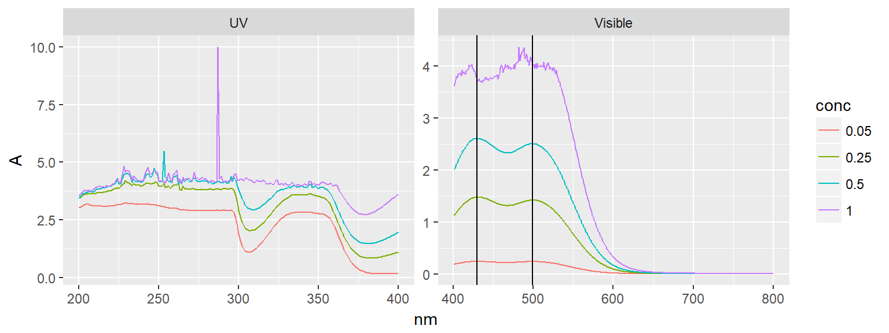
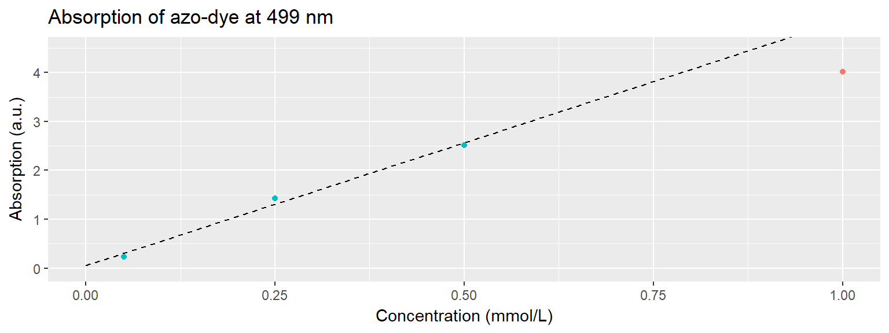

Following the succesful synthesis of 4-aminoethylbenzenediazonium salt, it was necessary to repeat azo-dye formation, in order to make a calibration curve for UV-Vis. In this way, the diazonium concentration during graphene exfoliation can easy be monitored by extracting small samples of the electrolyte.

Solutions were prepared:
A series of azo samples with different concentrations were prepared, based on the following table:
library(tidyverse)
tribble(
~V_diazo, ~V_acid, ~V_naphtol,
2, 0, 2,
1, 1, 2,
0.5, 1.5, 2,
0.1, 1.9, 2
) %>%
mutate(
V_final = V_diazo + V_acid + V_naphtol,
C_dye = 2 * V_diazo / V_final,
C_diazo = 2 * C_dye
) %>%
knitr::kable(col.names = c('V~diazo~ (mL)', 'V~H2SO4~ (mL)', 'V~naphtol~ (mL)', 'V~final~ (mL)', 'C~dye~ (mM)', 'C~diazo~ (mM)'))| Vdiazo (mL) | VH2SO4 (mL) | Vnaphtol (mL) | Vfinal (mL) | Cdye (mM) | Cdiazo (mM) |
|---|---|---|---|---|---|
| 2.0 | 0.0 | 2 | 4 | 1.00 | 2.0 |
| 1.0 | 1.0 | 2 | 4 | 0.50 | 1.0 |
| 0.5 | 1.5 | 2 | 4 | 0.25 | 0.5 |
| 0.1 | 1.9 | 2 | 4 | 0.05 | 0.1 |
This produces bright red dyes immediately upon mixing. Here at 1 mM concentration.

path <- "data/raw_data/uvvis/20171026_Azodye/"
data171026 <- tibble(file = list.files(path = path, pattern = "*.csv")) %>%
mutate(data = map(paste0(path,file), read_delim, delim = ";", skip = 1)) %>%
mutate(name = stringr::str_extract(file, pattern = "^[\\sa-zA-Z0-9_-]*")) %>%
mutate(conc = stringr::str_extract(file, pattern = "[\\d]+\\.[\\d]+(?=mM)") %>% as.numeric()) %>%
unnest() %>%
mutate(region = ifelse(nm > 400, "Visible", "UV"))The red dyes have a large absorption, with peaks at 430 nm and 499 nm.
data171026 %>%
mutate(conc = as.factor(conc)) %>%
ggplot(aes(nm, A, color = conc)) +
geom_line() +
geom_vline(data = tibble(region = "Visible", maxima = c(430, 499)), aes(xintercept = maxima)) +
facet_wrap(~region, scales = "free") 
These (here for 499 nm) can be used to calibrate the concentration against the absorption.
data171026_cal <- data171026 %>%
filter(nm == 499)
# Fit a linear model to the data
fit171026 <- lm(A ~ conc, data = data171026_cal %>% filter(conc != 1.00))
new_C <- tibble(conc = seq(0, 1, 0.1))
fitted171026 <- cbind(new_C, predict(fit171026, interval = "confidence", newdata = new_C))
eps499 <- round(broom::tidy(fit171026)$estimate[[2]] * 1000) # Extract eps and convert from L/mmol*cm to L/mol*cm
data171026_cal %>%
ggplot() +
geom_point(aes(conc, A, color = conc < 1.00)) +
geom_line(data = fitted171026, aes(conc, fit), linetype = 2) +
#geom_ribbon(data = fitted171026, aes(x = conc, ymin = lwr, ymax = upr), alpha = 0.2) +
labs(title = "Absorption of azo-dye at 499 nm", x = "Concentration (mmol/L)", y = "Absorption (a.u.)") +
theme(legend.position = "none") +
coord_cartesian(ylim = c(-0.05, 4.5))
The 1 mM sample is excluded from this fit, since the sample was too concentrated and the UV-Vis spectrometer could not reliably measure this spectrum. For this reason, the best approach in the exfoliation experiment would be to produce more dilute samples, ensuring that the absorption at 499 nm can be measured reliably.
Using Lambert-Beers law \((A = \epsilon_\lambda\cdot C\cdot l)\), the extinction coefficient of the azo-dye is found to be \(\epsilon_{499} = 5022 \frac{L}{cm\, mol}\).
This shows the succesful generation of azo-dye molecules, that can be used to monitor the diazonium concentration during exfoliation.
In order to reliably measure the concentration of the extracted samples the concentration needs to be lower (preferably with a dye concentration < 0.5 mM). If exfoliation experiments are still conducted with diazonium-concentration of 2 mM and 2 mL samples are extracted, this means that the volume of the sample for UV-Vis should be \(\frac{2\, mM\cdot 2\, mL}{0.5\, mM} = 8 mL\). I wish to use 1.5 eq. of 2-Naphtol, to ensure enough for reaction. This means that the 6 mL 2-Naphtol solution must have a concentration of \(\frac{2\, mM\cdot 2\, mL\cdot 1.5}{6\, mL} = 1 mM\). The 2-Naphtol solution used for analysis thus must be a 1 mM solution in \(\frac{1}{6}\) 10 % NaOH and \(\frac{5}{6}\) H2O, which is 0.144 mg/mL.
E.g. for 50 mL solution use 7.2 mg 2-Naphtol in 8 mL 10 % NaOH and 42 mL H2O.